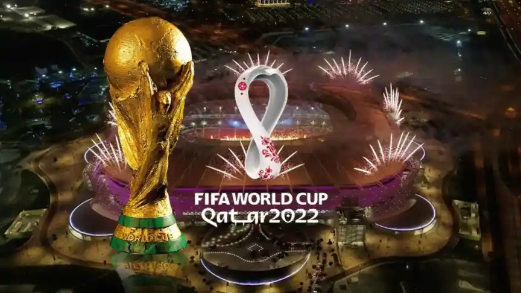
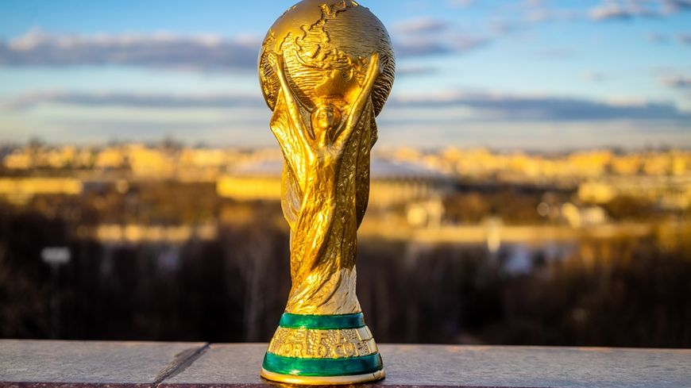
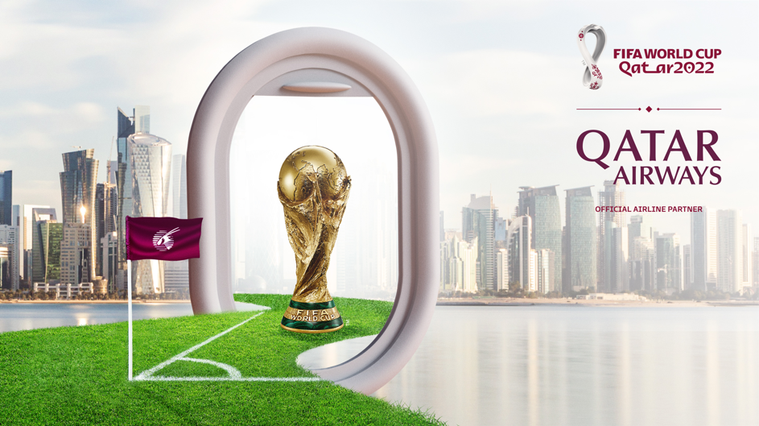

La Coupe du monde de football 2022 est la 22e édition de la Coupe du monde de football. Ensuite, c'est une compétition organisée par la FIFA et qui réunit les meilleures sélections nationales. Cette année, elle se déroulera au Qatar du 21 novembre au 18 décembre 20221. En plus, sera le jour de la fête nationale du Qatar et une semaine avant Noël, avec une estimation du marché télévisuel potentiel à 3,2 milliards de téléspectateurs. La période inédite à laquelle se déroulera le tournoi est liée au climat du Qatar et aux trop fortes chaleurs y régnant, particulièrement aux dates où se déroule habituellement la compétition (mai-juin-juillet).

La présence du Qatar, qui se qualifie d'office comme pays hôte du tournoi, perpétue la tradition des équipes apparaissant pour la première fois dans l'histoire de la Coupe du monde même si c'est la première fois sans un nouveau pays qualifié sur le terrain. Faute d'infrastructures sportives adéquates, l'État qatari est impliqué dans de grands chantiers, ce qui lui a valu de vives critiques. Plus de 37 travailleurs étrangers sont morts sur les chantiers de la Coupe du monde 2022, selon des sources gouvernementales, un nombre que de nombreuses organisations et journalistes jugent sous-évalué.
